To start a digitisation, first you need to define a project in the project setting section, and create a template. All of your specimens will be super-imposed on the template.
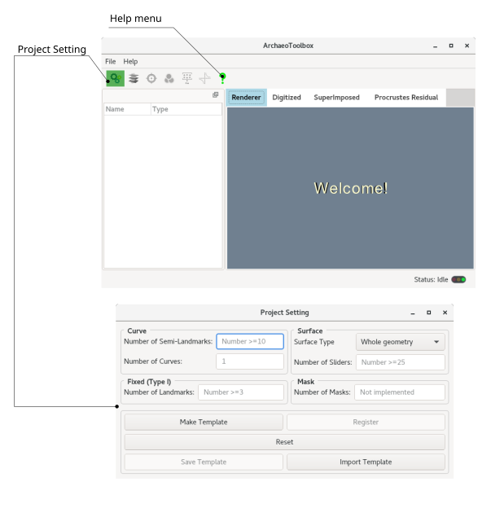
1- Defining the number and the type of the landmarks
In this section, you can define the number of fixed landmarks for your project.
In this part, you can define the number of sliders per each curve, and the number of the curves as well. The total number of curve sliders is equal to number of curves * number of sliders (semi-landmarks) per curve.
In this part, you can define the number of surface sliders. To do so, you have two options: 1- Whole geometry, and 2- Patches. The whole geometry is self explanatory. The surface sliders will cover whole surface of the mesh. You have an option of marking (paiting) exclusion areas.If you want to digitise surface sliders on specific area of your geometry, and if the mentioned area can be described as a (or multiple) parametrisable NURBS surface(s), then it is more convenient to select "Patches" option, instead of "whole geometry". However, if the area of intrest (AOI) has a complex shape, then you are better off proceeding with the whole geometry and painting the AOI.
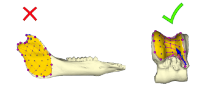
If the "Patches" option suits your AOI, then you have to decide the resolution of your surface semi-landmarks in the context of NURBS surface. In the simplest example (i.e. when the AOI has a quadrilateral shape), U and V define number of semi-landmarks along the horizontal and vertical axes, respectively. So, the total number of semi-landmarks per each patch is U x V. Remember that you can have multiple AOIs.
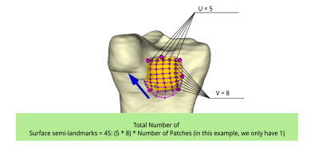
As mentioned before, if the AOI has complex shape, it is recmmended to choose whole geometry option, and mark the exclusion. To do so, in the digitisation windows (given that you selected whole geometry instead of Patches) you have an option to paint exclusion mask. You can change the size of the painting brush as well. Ctrl + A will select all mesh as the exclusion area (gray color). Then you can hold the shift and get the AOI unpainted.
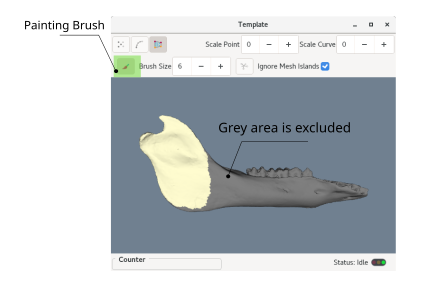
Patches or whole geometry?
As mentioned before, it is possible to use the whole geometry option to digitise some parts of the geometry (using exclusion paint), but it is reccomended to do so only if those parts have complex shapes (too complex to build NURBS surfaces upon them). The reason is that the registration of specimens on the template is more difficult, and slower for unorganised (unstructured) landmarks. NURBS surfaces, in contrast, are structured, they have orientation and one can define semilandmarks by evaluating NURBS at equidistant intervals.
2- Digitising the template landmarks
After defining the number and the type of the landmarks, now it is time to digitise them. To do so, click on the "Make Template". This will prompt you to locate a geometry (.OBJ mesh) for the template.
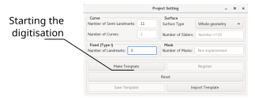
Template Digitiser
The template digitiser will popup after clicking the "Make Templte". This window gives you options to digitise fixed, curve and surface landmarks. The template digitisers are almost identical to the specimen digitisers (we will discuss them later), except the template surface digitiser. If your project doesn't have a specific type of landmark, the corresponding digitiser will be grayed out.
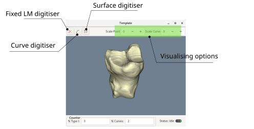
User interaction and landmark picking
In general (for both template and specimens digitisation), to pick a point as a landmark, surface or curve control point, Ctrl + right-click mouse button will register the vertex, and Shift + right-click will remove the vertex. Ctrl + mid-click will pan (move) a landmark or control point.
Template Fixed landmarks digitisation
After clicking (activating) the fixed landmark digitiser, a separate tool ribbon will be appear, and you will be able to ctrl+right-click at any location on the surface of your template mesh to register landmarks. The counter ribbon at the bottom of the digitiser will keep track of the number of remaining landmarks. If you miss-placed a landmark, you can delete it (Shift + right-click) or move it to the correct location (Ctrl + mouse middle-button). Fixed landmarks are colored red.
On the fixed LM digitiser ribbon, there is a checkbox named "Show the largest diameter". If you have a geometry with open edges (e.g. a limpet shell), and you want to put fixed landmarks at the largest diameter of the said geometry, you can check the box. It will help you to highlight the suitable locations consistently through your template and specimens. If your geometry doesn't have a loose edge, you will recieve a warning, and nothing will happen after that.
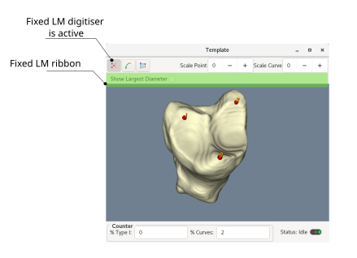
Template Curve semi-landmarks digitisation
After activating the curve digitiser, a separate tool ribbon will be appear, and you will be able to ctrl+right-click at any location on the surface of your template mesh to register curve CONTROL POINTS, NOT LANDMARKS! Curve landmarks are colored green, and will be digitised automatically based on equidistant intervals across the curve. The curve is a parametric curve, and its control points are colored purple. A curve can be a closed or open curve. For complex curves, it is reccomended to start digitising it as an open curve, then close it at the end. You can delete or move control points, but you cannot interact with the semi-landmarks directly. In addition, it is crucial to remember the curve has a direction (equivalend of clockwise or anti-clockwise in 2D), and once you decided the direction of template curve(s), you must keep it consistent for all specimens as well.
After digitising a curve, if you have multiple curves to digitise, you must click "Add a curve" and repeat the same process again. You can go back to your previously digitise curve to modify it (its control points) by browsing the curve index. Remember the indexing starts at 0. In addition, if you already digitised a surface patch, and you want to digitise a curve around the patch, you can digitise the curve using "From Surface" option, and selecting the corresponding index of the surface patch. Although, it is recommended to digitise curves first, and create surface patches from the curves. There is also a check box option in the curve digitising ribbon, named "Limit to Loose Boundaries". If you have a a geometry with open edges (e.g. a limpet shell), and you want to digitise a curve around the loose edge, you can check the box and the curve will be projected on the loose edge.
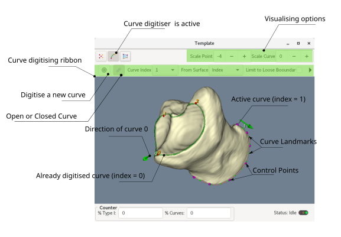
Template Surface semi-landmarks digitisation: Whole Surface
After activating the surface digitiser, a separate tool ribbon will be appear, and you will be able to exclude areas if you desire to do so. The whole geometry surface semi-landmarks are not interactive, and upon pressing "Sample Pre-Sliders", they will be generated across the geometry, except the exclusion areas. If your project contains fixed and/or curve landmarks, it is recommended to digitise the whole geometry (semi) landmarks at the end. You will receive a warning if you donot do so, and you can ignore the warning or go back and digitise the fixed - curve landmarks first and come back again.
Regarding the exclusion paint brush, after activating the tool, you have an option of changing the brush size. You can use the combination of ctrl+A to select all surface of your geometry as the exclusion area, or shift + A to clean all the paintings. The painting interaction is similar to the picking landmarks: Ctrl + left-click (hold it while moving your mouse) will paint and Shift + left-click (hold it) will erase the paint. If you are interested to digitise an small part of your surface, you can select all the mesh as the exclusion area, then shift+left-click to unpaint the area of interest (AOI). Remember to proceed with the digitisation (Sample Pre-Sliders), you must get out of the painting brush tool by deactivating it first (clicking the button again). While you are using the brush tool, the sampling pre-sliders option is grayed out.
In addition, there is a checkbox named "Ignore Mesh Islands", which is avtivated by default. This option is useful when you have a mesh with multiple disconnected parts, and you want to digitise only the largest one. To do so, you must uncheck the said box and proceed with the sampling pre-sliders. An example is when you have a mesh with internal parts (e.g. after segmenting CT scan files), and you want to exclude the internal islands from digitisation.
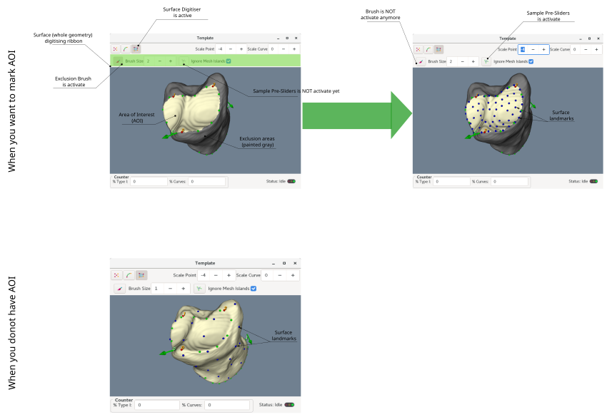
Template Surface semi-landmarks digitisation: Patches
The surface digitiser ribbon changes it's functionality drastically if you choose patches instead of whole geometry. In the case of surface patches, after activating the surface digitiser, a separate tool ribbon will be appear, and you will be able to ctrl+right-click at any location on the surface of your template mesh to register patches CONTROL POINTS, NOT LANDMARKS! When you release ctrl, a NURBS surface (colored golden yellow) will be created using the picked control points. You can resume the process by pressing ctrl again (which makes the NURBS dissapear), and picking control points or delete them, or even move them around. The surface sliders (semi-landmarks) will be created automatically by evaluating NURBS at equidistant intervals. Each time you release the Ctrl, the mesh will be cut using the curve control points, and the interpolated NURBS will be projected on one of thee cut pieces. You have to cycle through all available patches and choose the one covering AOI. Normally, mesh will be cut in two pieces and you have only two options to cycle through. However, sometimes the mesh has many small disconnected parts (if you didn't clean the mesh before the digitisation). It is possible to interact with the patch landmarks by activating the "Iron the NURBS". The interaction is limited to moving the landmarks around, and it is useful when the shape of a patch is complex and you want to untangle or spread the landmarks. After deactivating the iron, the patch goes to the state of lock, and you cannot interact with it anymore. You can, however, unlock the patch and resume necessary modifications. If you have more than one patch, you can add the new one by pressing "Add a Surface".
It is crucial to mention that you can use previously digitised curves to define patches control points. Doing so will save time and make the digitisation process less prone to human error. Therefore, it is adviced to mark the boundariy of AOI with curve landmarks and then create patches using them. You can select the curve index to assign the curve for creating the patches. Similar to the curves, NURBS patches also have directional information (in the form of a blue arrow per each patch). It is needless to say, the direction of patches must be consistent through the sample pool. In addition, after selecting the suitable patch (cycling through all produced patches), if the generated surface (semi) landmarks are entangled, or their distribution is not smooth even after the ironing process (e.g. the figure below, the disfunctional patch), you must change the project setting and use whole geometry option, and pain the exclusion area.Notice that in disfunctional patch, all (semi) landmarks are concenrtated at the edge of the patch, and it will take hours to iron them and spread them properly.
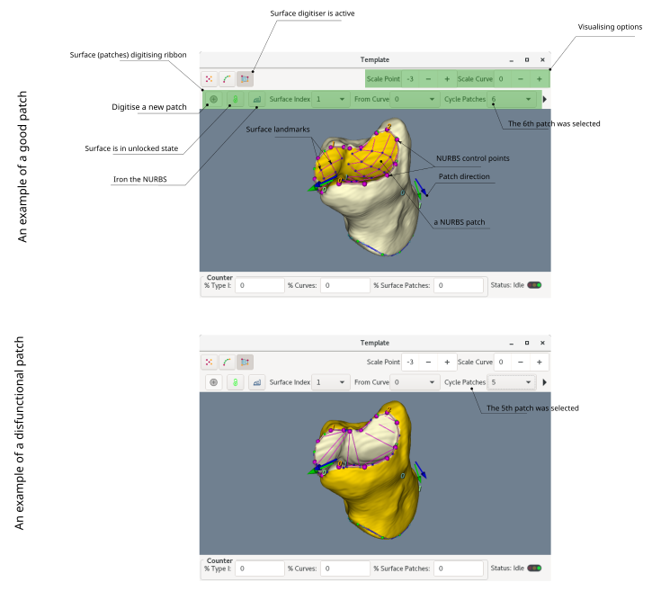
Registration
When you finished digitising template landmarks, simply close the digitiser window, and push the register button. You can also save the template for later use (you can import it later), or reset if if you are not happy with the results. Remember that resetting will also remove digitised landmarks. It basically resets the whole project! After the registration is done, you can always take a look at your template by pressing "Plot Template" button. It is a good practice to have template plot open while digitising specimens. The direction of curves and patches, and the succession of the fixed landmarks must be consistent for all specimens.
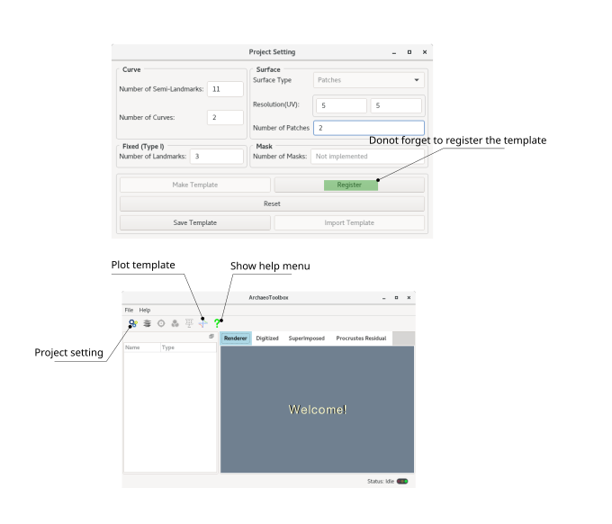